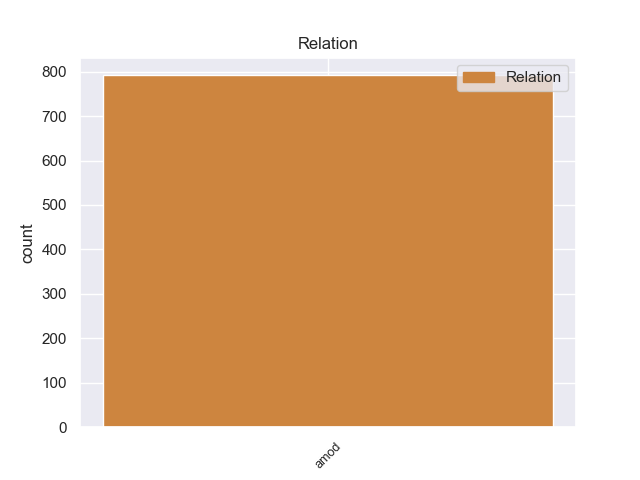
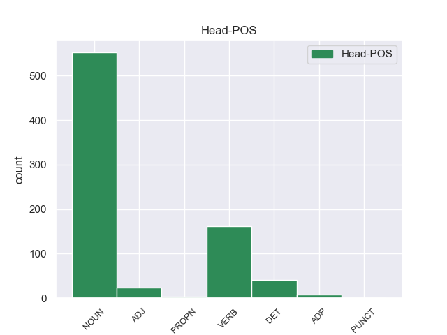
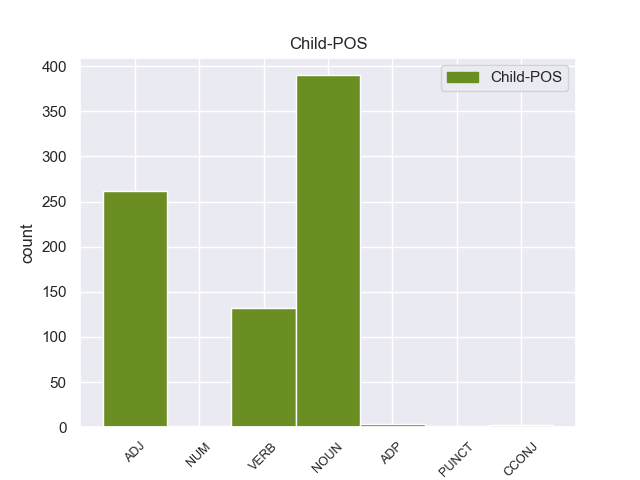

Distribution of features within this leaf



Agreement Rules sorted by frequency.
- When the dependent token is the adjectival modifier(amod) of the head token, and the dependent token is NOUN.
1 πρόκειται _ _ _ _ 0 _ _ _
2 για _ _ _ _ 0 _ _ _
3 αυτό _ _ _ _ 0 _ _ _
4 το _ _ _ _ 0 _ _ _
5 οποίο _ _ _ _ 0 _ _ _
6 αποκαλύφθηκε _ _ _ _ 0 _ _ _
7 κατά _ _ _ _ 0 _ _ _
8 τη _ _ _ _ 0 _ _ _
9 διάρκεια _ _ _ _ 0 _ _ _
10 αυτής _ _ _ _ 0 _ _ _
11 της _ _ _ _ 0 _ _ _
12 διαδικασίας _ _ _ _ 0 _ _ _
13 , _ _ _ _ 0 _ _ _
14 ότι _ _ _ _ 0 _ _ _
15 ο _ _ _ _ 0 _ _ _
16 Εισαγγελέας _ _ _ _ 0 _ _ _
17 κάποια _ _ _ _ 0 _ _ _
18 στιγμή _ _ _ _ 0 _ _ _
19 ζήτησε _ _ _ _ 0 _ _ _
20 από _ _ _ _ 0 _ _ _
21 την _ _ _ _ 0 _ _ _
22 Πρόεδρο _ _ _ _ 0 _ _ _
23 του _ _ _ _ 0 _ _ _
24 Σώματος _ _ _ _ 0 _ _ _
25 , _ _ _ _ 0 _ _ _
26 την _ _ _ _ 0 _ _ _
27 προκάτοχό _ _ _ _ 0 _ _ _
28 σας _ _ _ _ 0 _ _ _
29 , _ _ _ _ 0 _ _ _
30 λεπτομέρειες _ _ _ _ 0 _ _ _
31 για _ _ _ _ 0 _ _ _
32 την _ _ _ _ 0 _ _ _
33 ψήφο _ _ _ _ 0 _ _ _
34 που _ _ _ _ 0 _ _ _
35 έχουν _ _ _ _ 0 _ _ _
36 δώσει _ _ _ _ 0 _ _ _
37 οι _ _ _ _ 0 _ _ _
38 δύο _ _ _ _ 0 _ _ _
39 συγκεκριμένοι συγκεκριμένο NOUN _ Case=Gen|Gender=Fem|Number=Sing 51 amod _ _
40 βουλευτές _ _ _ _ 0 _ _ _
41 προκειμένου _ _ _ _ 0 _ _ _
42 να _ _ _ _ 0 _ _ _
43 διευκρινιστεί _ _ _ _ 0 _ _ _
44 περαιτέρω _ _ _ _ 0 _ _ _
45 η _ _ _ _ 0 _ _ _
46 πιθανότητα _ _ _ _ 0 _ _ _
47 να _ _ _ _ 0 _ _ _
48 είχαν _ _ _ _ 0 _ _ _
49 ασκήσει _ _ _ _ 0 _ _ _
50 αθέμιτη _ _ _ _ 0 _ _ _
51 επιρροή επιρροή NOUN _ Case=Acc|Gender=Fem|Number=Sing 0 _ _ _
52 . _ _ _ _ 0 _ _ _
1 Το _ _ _ _ 0 _ _ _
2 άρθρο _ _ _ _ 0 _ _ _
3 9 _ _ _ _ 0 _ _ _
4 του _ _ _ _ 0 _ _ _
5 Πρωτοκόλλου _ _ _ _ 0 _ _ _
6 , _ _ _ _ 0 _ _ _
7 όπως _ _ _ _ 0 _ _ _
8 επεσήμανε _ _ _ _ 0 _ _ _
9 με _ _ _ _ 0 _ _ _
10 αυστηρότητα _ _ _ _ 0 _ _ _
11 η _ _ _ _ 0 _ _ _
12 Πρόεδρος _ _ _ _ 0 _ _ _
13 Fontaine _ _ _ _ 0 _ _ _
14 σ _ _ _ _ 0 _ _ _
15 τον _ _ _ _ 0 _ _ _
16 Εισαγγελέα _ _ _ _ 0 _ _ _
17 , _ _ _ _ 0 _ _ _
18 μας _ _ _ _ 0 _ _ _
19 απαλλάσσει _ _ _ _ 0 _ _ _
20 τελείως _ _ _ _ 0 _ _ _
21 από _ _ _ _ 0 _ _ _
22 οποιαδήποτε _ _ _ _ 0 _ _ _
23 νομική _ _ _ _ 0 _ _ _
24 διαδικασία διαδικασία DET _ Case=Acc|Gender=Fem|Number=Sing 0 _ _ _
25 σε _ _ _ _ 0 _ _ _
26 σχέση _ _ _ _ 0 _ _ _
27 με _ _ _ _ 0 _ _ _
28 την _ _ _ _ 0 _ _ _
29 έκφραση _ _ _ _ 0 _ _ _
30 γνώμης _ _ _ _ 0 _ _ _
31 ή _ _ _ _ 0 _ _ _
32 ψήφου _ _ _ _ 0 _ _ _
33 κατά _ _ _ _ 0 _ _ _
34 την _ _ _ _ 0 _ _ _
35 άσκηση _ _ _ _ 0 _ _ _
36 των _ _ _ _ 0 _ _ _
37 καθηκόντων καθηκόντων ADJ _ Case=Acc|Gender=Fem|Number=Sing 24 amod _ _
38 μας _ _ _ _ 0 _ _ _
39 ως _ _ _ _ 0 _ _ _
40 μέλη _ _ _ _ 0 _ _ _
41 αυτού _ _ _ _ 0 _ _ _
42 του _ _ _ _ 0 _ _ _
43 Κοινοβουλίου _ _ _ _ 0 _ _ _
44 . _ _ _ _ 0 _ _ _
1 Με _ _ _ _ 0 _ _ _
2 αυτές _ _ _ _ 0 _ _ _
3 τις _ _ _ _ 0 _ _ _
4 κατηγορίες _ _ _ _ 0 _ _ _
5 , _ _ _ _ 0 _ _ _
6 από _ _ _ _ 0 _ _ _
7 τις _ _ _ _ 0 _ _ _
8 οποίες _ _ _ _ 0 _ _ _
9 η _ _ _ _ 0 _ _ _
10 πρώτη _ _ _ _ 0 _ _ _
11 αφορά _ _ _ _ 0 _ _ _
12 λαθρεμπόριο _ _ _ _ 0 _ _ _
13 όπλων _ _ _ _ 0 _ _ _
14 κλπ. _ _ _ _ 0 _ _ _
15 , _ _ _ _ 0 _ _ _
16 και _ _ _ _ 0 _ _ _
17 βαρύνει _ _ _ _ 0 _ _ _
18 τόσο _ _ _ _ 0 _ _ _
19 τον _ _ _ _ 0 _ _ _
20 κ. _ _ _ _ 0 _ _ _
21 Pasqua _ _ _ _ 0 _ _ _
22 όσο _ _ _ _ 0 _ _ _
23 και _ _ _ _ 0 _ _ _
24 τον _ _ _ _ 0 _ _ _
25 κ. _ _ _ _ 0 _ _ _
26 Marchiani _ _ _ _ 0 _ _ _
27 , _ _ _ _ 0 _ _ _
28 ενώ _ _ _ _ 0 _ _ _
29 η _ _ _ _ 0 _ _ _
30 δεύτερη _ _ _ _ 0 _ _ _
31 στρέφεται _ _ _ _ 0 _ _ _
32 μόνον _ _ _ _ 0 _ _ _
33 εναντίον _ _ _ _ 0 _ _ _
34 του _ _ _ _ 0 _ _ _
35 κ. _ _ _ _ 0 _ _ _
36 Pasqua _ _ _ _ 0 _ _ _
37 , _ _ _ _ 0 _ _ _
38 οι _ _ _ _ 0 _ _ _
39 ανακριτές _ _ _ _ 0 _ _ _
40 δικαστές _ _ _ _ 0 _ _ _
41 ζητούν _ _ _ _ 0 _ _ _
42 την _ _ _ _ 0 _ _ _
43 άρση _ _ _ _ 0 _ _ _
44 της _ _ _ _ 0 _ _ _
45 βουλευτικής _ _ _ _ 0 _ _ _
46 ασυλίας _ _ _ _ 0 _ _ _
47 των _ _ _ _ 0 _ _ _
48 εν _ _ _ _ 0 _ _ _
49 λόγω _ _ _ _ 0 _ _ _
50 δύο _ _ _ _ 0 _ _ _
51 κυρίων _ _ _ _ 0 _ _ _
52 , _ _ _ _ 0 _ _ _
53 προκειμένου _ _ _ _ 0 _ _ _
54 να _ _ _ _ 0 _ _ _
55 τους _ _ _ _ 0 _ _ _
56 επιβληθούν _ _ _ _ 0 _ _ _
57 ορισμένα _ _ _ _ 0 _ _ _
58 μέτρα _ _ _ _ 0 _ _ _
59 δικαστικής _ _ _ _ 0 _ _ _
60 επιτήρησης _ _ _ _ 0 _ _ _
61 : _ _ _ _ 0 _ _ _
62 να _ _ _ _ 0 _ _ _
63 τους _ _ _ _ 0 _ _ _
64 απαγορευθεί απαγορευθεί VERB _ Case=Acc|Gender=Fem|Number=Sing 66 amod _ _
65 η _ _ _ _ 0 _ _ _
66 επαφή επαφ NOUN _ Case=Acc|Gender=Fem|Number=Sing 0 _ _ _
67 με _ _ _ _ 0 _ _ _
68 διάφορους _ _ _ _ 0 _ _ _
69 μάρτυρες _ _ _ _ 0 _ _ _
70 ή _ _ _ _ 0 _ _ _
71 συγκατηγορουμένους _ _ _ _ 0 _ _ _
72 σ _ _ _ _ 0 _ _ _
73 τις _ _ _ _ 0 _ _ _
74 υποθέσεις _ _ _ _ 0 _ _ _
75 αυτές _ _ _ _ 0 _ _ _
76 και _ _ _ _ 0 _ _ _
77 η _ _ _ _ 0 _ _ _
78 μετάβαση _ _ _ _ 0 _ _ _
79 σε _ _ _ _ 0 _ _ _
80 διάφορες _ _ _ _ 0 _ _ _
81 χώρες _ _ _ _ 0 _ _ _
82 , _ _ _ _ 0 _ _ _
83 καθώς _ _ _ _ 0 _ _ _
84 και _ _ _ _ 0 _ _ _
85 να _ _ _ _ 0 _ _ _
86 τους _ _ _ _ 0 _ _ _
87 επιβληθεί _ _ _ _ 0 _ _ _
88 ενδεχομένως _ _ _ _ 0 _ _ _
89 η _ _ _ _ 0 _ _ _
90 καταβολή _ _ _ _ 0 _ _ _
91 εγγύησης _ _ _ _ 0 _ _ _
92 . _ _ _ _ 0 _ _ _
1 Η _ _ _ _ 0 _ _ _
2 πλούσια _ _ _ _ 0 _ _ _
3 ιστορία ιστορία ADP _ Case=Acc|Gender=Fem|Number=Sing 0 _ _ _
4 του _ _ _ _ 0 _ _ _
5 νησιού _ _ _ _ 0 _ _ _
6 μαρτυρείται _ _ _ _ 0 _ _ _
7 από _ _ _ _ 0 _ _ _
8 τον _ _ _ _ 0 _ _ _
9 μεγάλο μεγάλο ADP _ Case=Acc|Gender=Fem|Number=Sing 3 amod _ _
10 αριθμό _ _ _ _ 0 _ _ _
11 των _ _ _ _ 0 _ _ _
12 μνημείων _ _ _ _ 0 _ _ _
13 και _ _ _ _ 0 _ _ _
14 αξιοθέατων _ _ _ _ 0 _ _ _
15 της _ _ _ _ 0 _ _ _
16 . _ _ _ _ 0 _ _ _
1 Η _ _ _ _ 0 _ _ _
2 μέθοδος _ _ _ _ 0 _ _ _
3 D' _ _ _ _ 0 _ _ _
4 Hondt _ _ _ _ 0 _ _ _
5 θα _ _ _ _ 0 _ _ _
6 μπορούσε _ _ _ _ 0 _ _ _
7 να _ _ _ _ 0 _ _ _
8 αντικατασταθεί _ _ _ _ 0 _ _ _
9 από _ _ _ _ 0 _ _ _
10 τη _ _ _ _ 0 _ _ _
11 μέθοδο _ _ _ _ 0 _ _ _
12 Saint _ _ _ _ 0 _ _ _
13 Laguλ laguλ CCONJ _ Case=Acc|Gender=Fem|Number=Sing 25 amod _ _
14 , _ _ _ _ 0 _ _ _
15 σύμφωνα _ _ _ _ 0 _ _ _
16 με _ _ _ _ 0 _ _ _
17 την _ _ _ _ 0 _ _ _
18 οποία _ _ _ _ 0 _ _ _
19 η _ _ _ _ 0 _ _ _
20 κατανομή _ _ _ _ 0 _ _ _
21 γίνεται _ _ _ _ 0 _ _ _
22 με _ _ _ _ 0 _ _ _
23 1 _ _ _ _ 0 _ _ _
24 , _ _ _ _ 0 _ _ _
25 3 3ς PUNCT _ Case=Gen|Gender=Neut|Number=Sing 0 _ _ _
26 , _ _ _ _ 0 _ _ _
27 5 _ _ _ _ 0 _ _ _
28 αντί _ _ _ _ 0 _ _ _
29 για _ _ _ _ 0 _ _ _
30 1 _ _ _ _ 0 _ _ _
31 , _ _ _ _ 0 _ _ _
32 2 _ _ _ _ 0 _ _ _
33 , _ _ _ _ 0 _ _ _
34 3 _ _ _ _ 0 _ _ _
35 , _ _ _ _ 0 _ _ _
36 4 _ _ _ _ 0 _ _ _
37 , _ _ _ _ 0 _ _ _
38 5 _ _ _ _ 0 _ _ _
39 . _ _ _ _ 0 _ _ _
1 Κατά _ _ _ _ 0 _ _ _
2 τα _ _ _ _ 0 _ _ _
3 κλασσικά _ _ _ _ 0 _ _ _
4 χρόνια _ _ _ _ 0 _ _ _
5 αποτέλεσε _ _ _ _ 0 _ _ _
6 την _ _ _ _ 0 _ _ _
7 πρώτη πρώτος NUM NUM Case=Acc|Gender=Fem|Number=Sing|NumType=Ord 9 amod _ _
8 σημαντική _ _ _ _ 0 _ _ _
9 σύγκρουση σύγκρουση NOUN NOUN Case=Acc|Gender=Fem|Number=Sing 0 _ _ _
10 του _ _ _ _ 0 _ _ _
11 Πελοποννησιακού _ _ _ _ 0 _ _ _
12 πολέμου _ _ _ _ 0 _ _ _
13 για _ _ _ _ 0 _ _ _
14 να _ _ _ _ 0 _ _ _
15 περιέλθει _ _ _ _ 0 _ _ _
16 σ _ _ _ _ 0 _ _ _
17 τη _ _ _ _ 0 _ _ _
18 συνέχεια _ _ _ _ 0 _ _ _
19 σ _ _ _ _ 0 _ _ _
20 τη _ _ _ _ 0 _ _ _
21 ρωμαϊκή _ _ _ _ 0 _ _ _
22 κατοχή _ _ _ _ 0 _ _ _
23 . _ _ _ _ 0 _ _ _
1 Σύμφωνα _ _ _ _ 0 _ _ _
2 με _ _ _ _ 0 _ _ _
3 τα _ _ _ _ 0 _ _ _
4 τελευταία _ _ _ _ 0 _ _ _
5 στατιστικά _ _ _ _ 0 _ _ _
6 στοιχεία στοιχεία DET _ Case=Acc|Gender=Fem|Number=Sing 0 _ _ _
7 από _ _ _ _ 0 _ _ _
8 την _ _ _ _ 0 _ _ _
9 Ευρωπαϊκή _ _ _ _ 0 _ _ _
10 Ένωση _ _ _ _ 0 _ _ _
11 , _ _ _ _ 0 _ _ _
12 " _ _ _ _ 0 _ _ _
13 περισσότερα _ _ _ _ 0 _ _ _
14 από _ _ _ _ 0 _ _ _
15 26 26 PUNCT _ Case=Acc|Gender=Fem|Number=Sing 6 amod _ _
16 εκατομμύρια _ _ _ _ 0 _ _ _
17 άτομα _ _ _ _ 0 _ _ _
18 είναι _ _ _ _ 0 _ _ _
19 άνεργοι _ _ _ _ 0 _ _ _
20 σ _ _ _ _ 0 _ _ _
21 τις _ _ _ _ 0 _ _ _
22 27 _ _ _ _ 0 _ _ _
23 χώρες _ _ _ _ 0 _ _ _
24 - _ _ _ _ 0 _ _ _
25 μέλη _ _ _ _ 0 _ _ _
26 της _ _ _ _ 0 _ _ _
27 Ευρωπαϊκής _ _ _ _ 0 _ _ _
28 Ένωσης _ _ _ _ 0 _ _ _
29 , _ _ _ _ 0 _ _ _
30 ενώ _ _ _ _ 0 _ _ _
31 πολλοί _ _ _ _ 0 _ _ _
32 περισσότεροι _ _ _ _ 0 _ _ _
33 είναι _ _ _ _ 0 _ _ _
34 εκτός _ _ _ _ 0 _ _ _
35 της _ _ _ _ 0 _ _ _
36 αγοράς _ _ _ _ 0 _ _ _
37 εργασίας _ _ _ _ 0 _ _ _
38 σ _ _ _ _ 0 _ _ _
39 την _ _ _ _ 0 _ _ _
40 υπόλοιπη _ _ _ _ 0 _ _ _
41 Ευρώπη _ _ _ _ 0 _ _ _
42 και _ _ _ _ 0 _ _ _
43 την _ _ _ _ 0 _ _ _
44 κεντρική _ _ _ _ 0 _ _ _
45 Ασία _ _ _ _ 0 _ _ _
46 " _ _ _ _ 0 _ _ _
47 . _ _ _ _ 0 _ _ _
No disagree examples found.